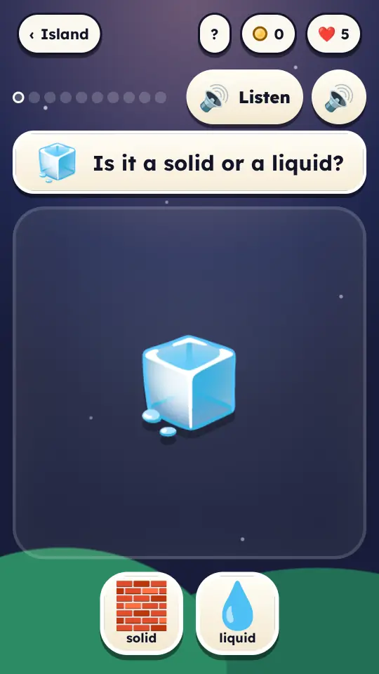

All labs › Chemistry › Solid or Liquid
Chemistry lab · Amma Jaya's Kitchen
Solid or Liquid
ठोस या तरल · जो दिखे उसे छाँटो
Sort everyday things into solids that keep their shape and liquids that pour.
- Chemistry
- Explorer · ages 4–7
- 10 levels
- English · हिंदी
- Free, no sign-up

How it works
Solid or liquid?
- A picture shows up, such as ice.
- Tap Solid if it keeps its shape. Tap Liquid if it pours.
- Ice is a solid. Milk is a liquid.
Explorer labs read instructions aloud, and a wrong try never costs anything.
Why it works
The big idea
A solid is like a toy block: it keeps its shape wherever you put it. A liquid is like juice: it takes the shape of the cup it is poured into.
What children learn
Skills in this lab
- Solids and liquids
- Keeping shape versus pouring
- Sorting by a property
For parents and teachers
This lab is in the Explorer band (ages 4–7). Each player picks a band, and sees only the labs made for it.
Curio Island is free in the browser with no sign-up. Progress is saved on this device only. Ads are child-safe and non-personalised, and never appear inside a lab.
Part of Amma Jaya's Kitchen on the island. 10 levels to finish.